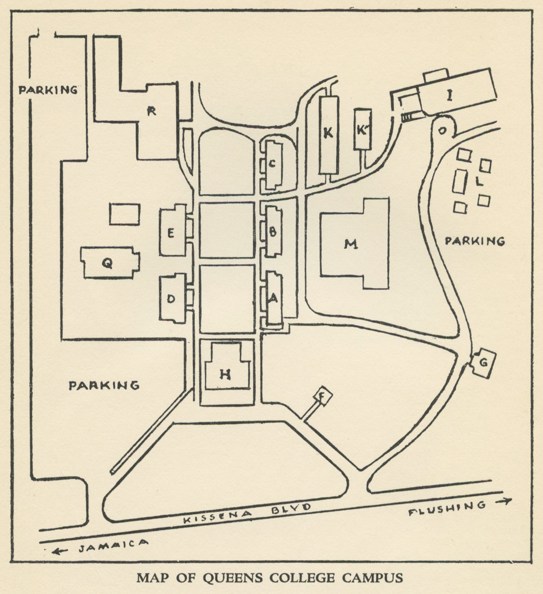

A Partial History of Queens College Campus Maps
1940
1956
1959
1960
1962
1970
1980

A • Clasrooms
B • Clasrooms
C • Classrooms
D • Physics
E • Arts Studios, Biology
F • Administrative Offices
G • Classrooms, Speech Center
H • Jefferson Hall
—Administrative Offices
—Library
—Auditorium
—Medical Office
—Gymnasium
I • The College Center
—Student Lounges
—Cafeteria
J • Home Economics
K • Classrooms
L • Bookstores, Music Classrooms
M • Paul Klapper Library
R • Classrooms & Laboratories